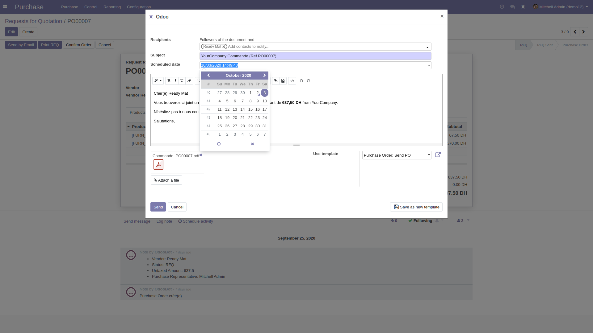

<section class="oe_container">
    <div class="oe_spaced">
        <h1 class="oe_slogan">Schedule email sending</h1>
        <h2 class="oe_slogan oe_mb32" style="color: #875a7b;">Add a scheduled date for your sent emails in Odoo</h2>
        <div class="oe_demo oe_screenshot">
            
        </div>
        <p>
            This module enables the possibility to planify sending an email from Odoo to a later date.
        </p>
        <h3>Configuration</h3>
        <p>No configuration is needed</p>
        <h3>Usage</h3>
        <p>When composing a message you have the possibility to set a scheduled date, in which the system will automatically send the email.</p>
    </div>
</section>
